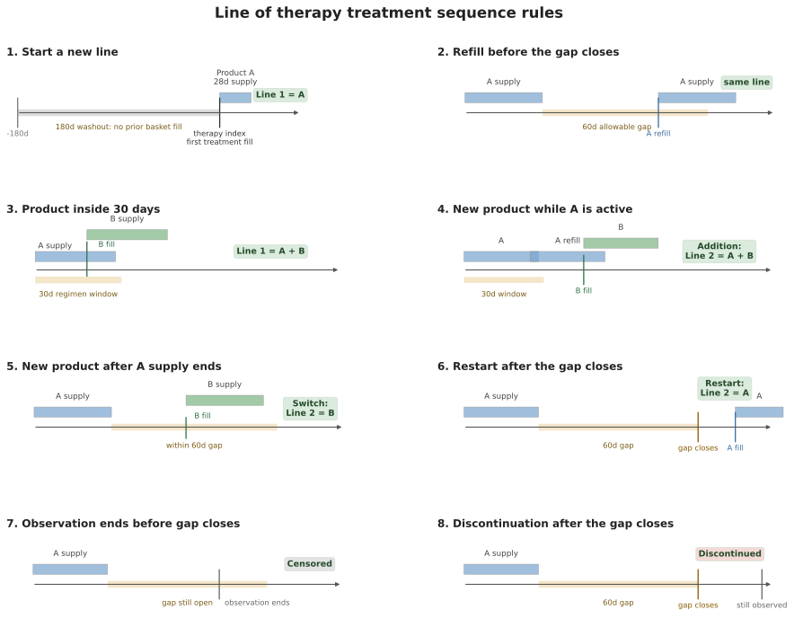
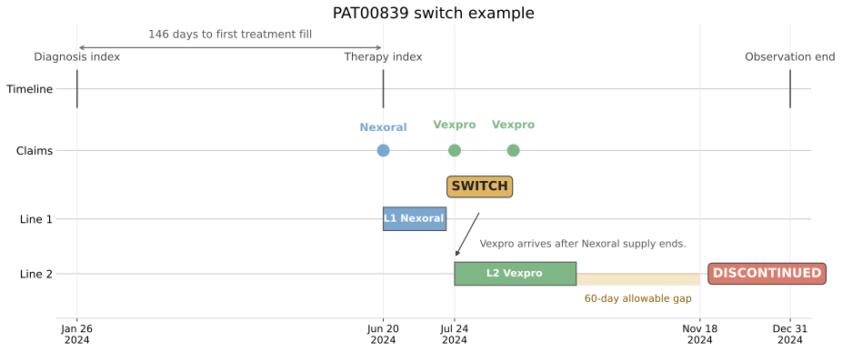
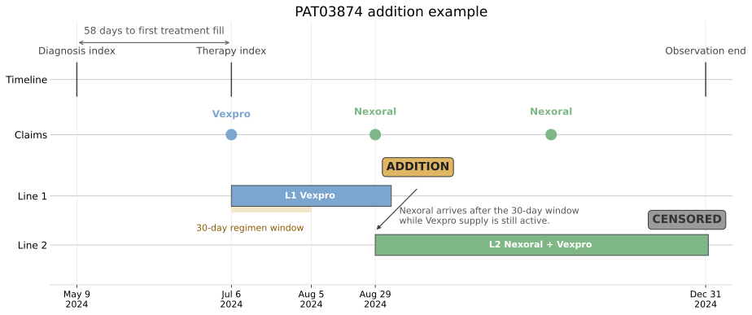

Chapter 5 Walkthrough: Treatment Patterns and Patient Journeys
This notebook replays the chapter as one executable story. Each step runs the same code printed in ch05_patient_journey.md, so the outputs here match the chapter exactly. Run it from the repository root after generating the Chapter 3 data package.
The dashboard reports 3,193 Roventra line-1 entries without a washout. The VP asks how many are newly observed starts. By the end of this notebook, the 180-day washout reduces that count to 2,798 and every rule between the 2 numbers is explicit.
1. Build the cohorts
The journey and line cohort requires a qualifying launch-condition diagnosis, 180-day lookback, 90-day follow-up, and a mature study end. The initiation analysis uses the same lookback but does not require 90 future days at entry.
import sys
from pathlib import Path
import pandas as pd
ROOT = Path.cwd()
if not (ROOT / "ch05_journey").exists():
ROOT = ROOT.parent
sys.path.insert(0, str(ROOT / "ch05_journey/scripts"))
from episode_construction import build_newly_observed_cohort, load_chapter3_data
tables = load_chapter3_data(ROOT / "ch03_data/output_data/generated_data")
cohort, attrition = build_newly_observed_cohort(
tables, minimum_lookback_days=180, minimum_followup_days=90
)
print(attrition)
stage patients \
0 Patients in source population 20000
1 Observed qualifying diagnosis 8213
2 Sufficient lookback 6562
3 Analysis cohort 5637
rule
0 One row in the patient reference table
1 At least one encounter with ICD prefix E11.9|E...
2 At least 180 covered days before index
3 Lookback plus at least 90 observable days afte...
The 5,637 patients form the journey and line-of-therapy cohort. The 90-day follow-up requirement gives early treatment patterns enough time to appear.

Figure 5.1. Cohort entry depends on observable time around the diagnosis index.
import subprocess
result = subprocess.run(
["uv", "run", "python", "ch05_journey/scripts/run_analysis.py"],
capture_output=True, text=True,
)
print(result.stdout)
3. A transaction is not a therapy
Resolve status before sequencing: completed fills are treatment evidence, while rejections and reversals are access signals.
from episode_construction import prepare_pharmacy_events
basket = tables["products"]["product_name"].tolist()
paid, nonpaid = prepare_pharmacy_events(tables["pharmacy_claims"], cohort, basket)
events = pd.concat([paid, nonpaid], ignore_index=True)
print("post-index basket transactions by status:")
print(events.transaction_type.value_counts())
paid_ids = set(paid.patient_id)
any_ids = set(events.patient_id)
print(f"\npatients with a treatment-basket fill: {len(paid_ids):>6,}")
print(f"patients with any basket transaction: {len(any_ids):>6,}")
print(f"access signals without treatment: {len(any_ids - paid_ids):>6,}")
post-index basket transactions by status:
transaction_type
PAID 8749
PENDED 1364
REVERSED 69
Name: count, dtype: int64
patients with a treatment-basket fill: 3,928
patients with any basket transaction: 3,980
access signals without treatment: 52
Transaction status separates access attempts from completed treatment. The treatment-fill and access-signal counts show the size of that distinction.
4. Lines of therapy: the worked patients
PAT00839 passes the washout, starts Nexoral, then switches to Vexpro after the Nexoral supply ends.

Figure 5.2. The washout rule. The top panel shows a post-diagnosis fill that looks like a new start only because earlier treatment fills are hidden by a no-washout view. The bottom panel shows a patient with no earlier treatment fills, kept in the cohort.

Figure 5.3. Line-of-therapy rules depend on the timing of fills, active supply, the regimen window, the allowable gap, and the observation boundary. Conceptual schematic.
out = ROOT / "ch05_journey/assets/generated_outputs"
pharmacy = tables["pharmacy_claims"]
basket = tables["products"]["product_name"].tolist()
mine = pharmacy[
pharmacy.patient_id.eq("PAT00839") & pharmacy.product_name.isin(basket)
].sort_values("date_of_service")
print("PAT00839, diagnosis index 2024-01-26:")
print(mine[["date_of_service", "product_name", "days_supply",
"transaction_type"]])
lines = pd.read_csv(f"{out}/lines.csv")
cols = ["line_number", "regimen", "line_start", "line_end",
"fill_count", "entry_reason", "end_reason", "line_days"]
print("\nlines of therapy:")
print(lines.loc[lines.patient_id.eq("PAT00839"), cols])
PAT00839, diagnosis index 2024-01-26:
date_of_service product_name days_supply transaction_type
1915 2024-06-20 Nexoral 30 PAID
1916 2024-07-22 Vexpro 30 PENDED
1917 2024-07-24 Vexpro 30 PAID
1918 2024-08-21 Vexpro 30 PAID
lines of therapy:
line_number regimen line_start line_end fill_count \
126 1 Nexoral 2024-06-20 2024-07-19 1
127 2 Vexpro 2024-07-24 2024-09-19 2
entry_reason end_reason line_days
126 Initial therapy Switch 30
127 Switch Discontinued 58

Figure 5.4. PAT00839 shows the switch rule. The diagnosis index anchors the cohort, the first Nexoral fill sets the therapy index, the Vexpro fill creates the switch, and the observation window extends past the 60-day gap so discontinuation is observed. Synthetic data.
PAT03874 demonstrates the addition rule: Nexoral arrives while Vexpro still has supply, after the regimen window closes, so the line advances to the combination.

Figure 5.5. PAT03874 shows the addition rule. The first Vexpro fill sets the therapy index, the 30-day regimen window closes on 2024-08-05, Nexoral arrives later while Vexpro still has active supply, and the line advances to Nexoral + Vexpro. Observation ends before the regimen can be classified as discontinued, so line 2 is censored. Synthetic data.
import pandas as pd
out = ROOT / "ch05_journey/assets/generated_outputs"
lines = pd.read_csv(f"{out}/lines.csv")
cols = ["line_number", "regimen", "line_start", "line_end",
"fill_count", "entry_reason", "end_reason", "line_days"]
print(lines.loc[lines.patient_id.eq("PAT03874"), cols])
line_number regimen line_start line_end fill_count \
643 1 Vexpro 2024-07-06 2024-09-03 1
644 2 Nexoral + Vexpro 2024-08-29 2025-01-01 2
entry_reason end_reason line_days
643 Initial therapy Addition 60
644 Addition Censored 126
5. The cohort's lines, and Thursday's answer
Line depth, entries, ends, line-1 regimens, and the washout comparison that resolves the opening scene.
import pandas as pd
out = ROOT / "ch05_journey/assets/generated_outputs"
lines = pd.read_csv(f"{out}/lines.csv")
print("patients by deepest line reached:",
lines.groupby("patient_id").line_number.max().value_counts().sort_index().to_dict())
print("how lines are entered:", lines.entry_reason.value_counts().to_dict())
print("how lines end: ", lines.end_reason.value_counts().to_dict())
print("\nline-1 regimens:")
print(pd.read_csv(f"{out}/lot_line1_summary.csv"))
print("\nRoventra line entries, with and without the washout rule:")
base = pd.read_csv(f"{out}/lot_entry_shares.csv").assign(rule="180-day washout")
naive = pd.read_csv(f"{out}/lot_entry_shares_naive.csv").assign(rule="no washout")
print(pd.concat([naive, base])[["rule", "position", "line_entries", "share"]]
)
patients by deepest line reached: {1: 3387, 2: 28}
how lines are entered: {'Initial therapy': 3415, 'Switch': 24, 'Addition': 4}
how lines end: {'Censored': 1938, 'Discontinued': 1477, 'Switch': 24, 'Addition': 4}
line-1 regimens:
regimen patients median_line_days discontinued_share
0 Roventra 2798 59.0 0.434
1 Vexpro 309 67.0 0.443
2 Nexoral 303 66.0 0.356
3 Nexoral + Vexpro 5 58.0 0.600
Roventra line entries, with and without the washout rule:
rule position line_entries share
0 no washout Line 1 3193 1.0
0 180-day washout Line 1 2798 1.0
Without the washout, Roventra has 3,193 line-1 entries. With it, the count is 2,798. The 395 records in between are continuing users that the no-washout view recounted as new starts.

Figure 5.6. The Sankey keeps first-line regimens on the left; still on line 1, discontinued, or advanced to line 2 on the right. Synthetic data.
6. Shake the rulers
One rule varies per row; the others hold at base.
import pandas as pd
out = ROOT / "ch05_journey/assets/generated_outputs"
grid = pd.read_csv(f"{out}/lot_sensitivity.csv")
view = grid[["varied", "washout_days", "regimen_window_days", "allowable_gap_days",
"new_to_therapy_patients", "combination_line1_share",
"line1_discontinued_share", "roventra_line1_entry_share"]]
print(view)
varied washout_days regimen_window_days allowable_gap_days \
0 washout 0 30 60
1 washout 90 30 60
2 washout 180 30 60
3 regimen window 180 14 60
4 regimen window 180 45 60
5 allowable gap 180 30 30
6 allowable gap 180 30 90
new_to_therapy_patients combination_line1_share line1_discontinued_share \
0 3928 0.001 0.474
1 3444 0.001 0.426
2 3415 0.001 0.428
3 3415 0.000 0.428
4 3415 0.004 0.430
5 3415 0.001 0.543
6 3415 0.001 0.323
roventra_line1_entry_share
0 1.0
1 1.0
2 1.0
3 1.0
4 1.0
5 1.0
6 1.0
The allowable gap moves the discontinuation result because it changes when a refill gap becomes an event. The Roventra entry share is less sensitive in this package. The commercial answer uses the 3,415 new-to-therapy patients and 2,798 Roventra first-line regimens as the corrected uptake baseline. Only 28 patients reach line 2, which supports rule validation but is too sparse for reliable later-line commercial comparisons.
7. Time to treatment, with censoring
The business questions determine the clock. Diagnosis to treatment start supports demand timing. Biomarker order to test result isolates testing delay. Prescription to PA approval isolates payer review. The available chapter data support the overall diagnosis-to-treatment-start clock.
Start with all 5 patients untreated. In this table, at risk means a patient is still being observed, has not started treatment yet, and could still start on that day. The untreated risk set is the group of patients who meet that condition right before the day's event. Patients A, B, and C start treatment on days 19, 31, and 59. Patients D and E stay in the untreated risk set until day 90, when follow-up ends and we censor them.

Figure 5.7. The total time to treatment contains several operational clocks. This chapter measures diagnosis to treatment start. The other clocks require their own dated events.
import pandas as pd
from survival import km_curve, km_median
toy = pd.DataFrame({"day": [19, 31, 59, 90, 90],
"treated": [True, True, True, False, False]})
observed = toy.loc[toy.treated, "day"]
toy_curve = km_curve(toy.day, toy.treated)
print(f"treated-only mean: {observed.mean():.1f} days")
print(f"treated-only median: {observed.median():.0f} days")
print(f"Kaplan-Meier median: {km_median(toy_curve):.0f} days")
print(toy_curve[["day", "at_risk", "events", "censored", "survival"]]
.round(3))
treated-only mean: 36.3 days
treated-only median: 31 days
Kaplan-Meier median: 59 days
day at_risk events censored survival
0 0 5 0 0 1.0
1 19 5 1 0 0.8
2 31 4 1 0 0.6
3 59 3 1 0 0.4
4 90 2 0 2 0.4

Figure 5.8. Patients D and E contribute untreated follow-up through day 90. Their censoring marks end observation, with no recorded treatment event. Conceptual example.
The median is day 59, the first treatment day when the estimated untreated probability reaches 0.50 or lower. The censored patients enlarge each earlier denominator and leave on day 90 without creating an event.
Now apply the method to the chapter cohort. Listing 5.1 found 6,562 patients with sufficient lookback. Among them, 169 have diagnosis dates after the December 31, 2024 study cutoff and provide no post-diagnosis time within the study. Removing them leaves 6,393 patients for treatment-initiation analysis. We do not require 90 days of follow-up because Kaplan-Meier uses each patient's available observation time.

Figure 5.9. The 2 panels show the same 5 patient histories from 2 angles. When treatment starts, the Kaplan-Meier curve falls while the cumulative initiation curve rises. Censoring on day 90 leaves both curves flat and ends follow-up.
import pandas as pd
out = ROOT / "ch05_journey/assets/generated_outputs"
journeys = pd.read_csv(f"{out}/initiation_journeys.csv")
treated = journeys[journeys.initiated_treatment]
print(f"end-of-study count: {len(treated):,} of {len(journeys):,} started; "
f"{1 - journeys.initiated_treatment.mean():.1%} without observed start")
print(f"naive median days to treatment, treated only: {treated.days_to_treatment.median():.0f}")
curve = pd.read_csv(f"{out}/initiation_curve.csv")
km_median = curve.loc[curve.cumulative_initiation.ge(0.5), "day"].iloc[0]
print(f"Kaplan-Meier median time to treatment: {km_median:.0f} days")
for day in (90, 180, 270):
row = curve.loc[curve.day.le(day)].iloc[-1]
print(f"KM cumulative initiation by day {day}: {row.cumulative_initiation:.1%} "
f"(95% CI {row.cumulative_initiation_lower_95:.1%} to "
f"{row.cumulative_initiation_upper_95:.1%}; {int(row.at_risk):,} at risk)")
end-of-study count: 4,110 of 6,393 started; 35.7% without observed start
naive median days to treatment, treated only: 104
Kaplan-Meier median time to treatment: 168 days
KM cumulative initiation by day 90: 30.5% (95% CI 29.4% to 31.7%; 3,957 at risk)
KM cumulative initiation by day 180: 52.9% (95% CI 51.6% to 54.3%; 2,142 at risk)
KM cumulative initiation by day 270: 74.3% (95% CI 72.9% to 75.6%; 722 at risk)
The initiation curve provides measured planning rates at specific horizons. A forecast team can multiply a separate forecast of comparable diagnoses by the cumulative initiation estimate for day 90, 180, or 270. The diagnosis forecast and the initiation curve remain separate because they come from different evidence. Stage dates are still needed to locate testing, treatment-decision, and access delays. HCP and payer comparisons require adequate sample sizes and adjustment for case mix.
Death before treatment
Replace Patient B's day-31 treatment with death. Death prevents a later start, so it is a competing event. The chapter's synthetic cohort does not contain a death-before-treatment record, so this section stays a teaching example. In a real study, death usually comes from linked EHR data, a mortality registry, or another source that records the death date. Standard pharmacy claims alone usually do not carry that field. Aalen-Johansen assigns probability separately to treatment, death, and remaining untreated and alive.

Figure 5.10. Initiation continues to accrue as the untreated risk set becomes smaller. The shaded band is the 95% confidence interval. Synthetic data.
from survival import aalen_johansen_curve
days = pd.Series([19, 31, 59, 90, 90])
outcomes = pd.Series(["Treated", "Died", "Treated", "Censored", "Censored"])
aj = aalen_johansen_curve(days, outcomes)
cols = ["day", "at_risk", "event_free", "cumulative_interest",
"cumulative_competing"]
print(aj[cols].round(3))
day at_risk event_free cumulative_interest cumulative_competing
0 0 5 1.0 0.0 0.0
1 19 5 0.8 0.2 0.0
2 31 4 0.6 0.2 0.2
3 59 3 0.4 0.4 0.2
4 90 2 0.4 0.4 0.2
By day 90, the competing-risk estimate assigns 40% to treatment, 20% to death before treatment, and 40% to remaining untreated and alive. The treatment median is not reached. The final commercial artifact should carry the chosen clock, cohort, observation window, censoring and competing-event rules, confidence intervals, numbers at risk, and data cutoff.
8. Persistence and adherence after treatment starts
Persistence measures time from the first treatment fill until departure from the initial regimen. Adherence, also called compliance, measures the share of observed days with qualifying supply available. PDC counts unique covered days, while MPR counts all dispensed days supply. The product basket determines whether coverage follows the starting product or any treatment for the condition.
The commercial review needs the day-90 persistence estimate, the PDC distribution, the effect of product scope, and payer comparisons with uncertainty.

Figure 5.11. The state-probability panel shows how all 3 patient states continue to sum to 100% while the cumulative incidence curves separate treatment from death.
import pandas as pd
from statistics import NormalDist
out = ROOT / "ch05_journey/assets/generated_outputs"
persistence = pd.read_csv(f"{out}/line1_persistence.csv")
for day in (60, 90, 113, 180):
row = persistence.loc[persistence.day.le(day)].iloc[-1]
print(f"day {day}: {row.survival:.1%} persistent; "
f"{int(row.at_risk):,} at risk")
product = pd.read_csv(f"{out}/adherence_index_product.csv")
basket = pd.read_csv(f"{out}/adherence_market_basket.csv")
print(f"index-product PDC: mean {product.pdc.mean():.3f}, "
f"median {product.pdc.median():.3f}, "
f"{product.adherent_pdc.mean():.1%} at or above 0.80")
print(f"higher basket PDC than index-product PDC: "
f"{basket.pdc.gt(product.pdc).sum():,} patients")
payer = pd.read_csv(f"{out}/adherence_by_payer.csv").query("payer_id != 'All'")
z = NormalDist().inv_cdf(0.975)
n, rate = payer.treated_patients, payer.adherent_pdc_rate
denominator = 1 + z**2 / n
center = (rate + z**2 / (2 * n)) / denominator
half_width = z * (rate * (1 - rate) / n + z**2 / (4 * n**2))**0.5 / denominator
payer = payer.assign(lower_95=center - half_width, upper_95=center + half_width)
print(payer[["payer_id", "adherent_pdc_rate", "lower_95", "upper_95"]]
.round(4))
day 60: 73.0% persistent; 1,776 at risk
day 90: 60.6% persistent; 1,128 at risk
day 113: 49.9% persistent; 701 at risk
day 180: 19.2% persistent; 50 at risk
index-product PDC: mean 0.445, median 0.395, 15.6% at or above 0.80
higher basket PDC than index-product PDC: 36 patients
payer_id adherent_pdc_rate lower_95 upper_95
1 PAY001 0.1661 0.1290 0.2113
2 PAY002 0.1837 0.1457 0.2289
3 PAY003 0.1677 0.1315 0.2115
4 PAY004 0.1318 0.1003 0.1713
5 PAY005 0.1400 0.1075 0.1803
6 PAY006 0.1637 0.1280 0.2070
7 PAY007 0.1450 0.1111 0.1870
8 PAY008 0.1522 0.1177 0.1946

Figure 5.12. Persistence follows elapsed time on the initial regimen, PDC counts covered days within the window, and MPR counts all dispensed supply. Synthetic data.
At day 90, 60.6% remain on the initial regimen. Among patients with at least 90 observable days, 15.6% have index-product PDC at or above 0.80, and product switching changes PDC for 36 patients. The payer intervals overlap substantially, so the raw ranking provides weak evidence for a payer-specific adherence difference.

Figure 5.13. Estimated initial-regimen persistence falls from 73.0% at day 60 to 49.9% at day 113. The 701 patients still at risk on day 113 provide less evidence than the 1,776 patients at risk on day 60. Synthetic data.

Figure 5.14. Most measured patients fall below the 0.80 index-product PDC threshold. The full distribution shows how far patients are from the threshold and avoids reducing the analysis to one pass rate. Synthetic data.

Figure 5.15. The payer confidence intervals overlap substantially, including the intervals for PAY002 and PAY004. The observed ranking provides weak evidence for a payer-specific difference. Synthetic data.
Exercises
- Audit a false new start by tracing 1 patient removed by the 180-day washout.
- Choose the adherence product scope by inspecting patients whose basket PDC exceeds index-product PDC.
- Stress-test the data cutoff by moving
study_endto 2025-01-31 and measuring the maturity artifact.
Worked answers with discussion: exercise_solutions.ipynb.